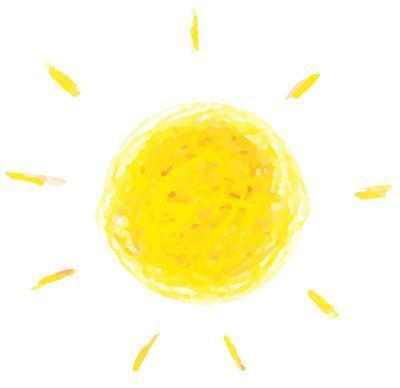
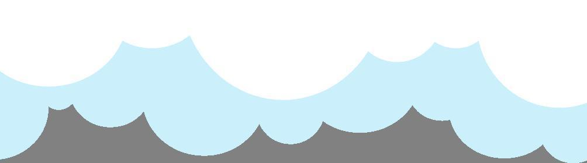

祝大家开学快乐~
开｜学｜温｜馨｜小｜提｜示
Happy start of school

kai
xue
kuai
le
01 | 网上授课 |
● 由于学校延迟返校，所以开学第一周的课由老师们在家进行网络授课（啊~这熟悉的网课）
● 虽然是在家里上网课，但同学们也要认真学习鸭。
● 同学们要注意调整作息时间，不要一觉睡到中午，错过了上午的网课呦。

02 | 返校注意事项 |
● 3月8号本科生一年级，研究生一、三年级和博士研究生返校。
● 3月9日本科生二年级返校。
●3月13日，本科生三、四年级，研究生二年级返校。
● 返校前每日要按时完成体温填表，并登陆学工系统申请返校。
●返校前14日内有重点关注地区旅居史的同学需提供返校前七日内的核酸检测阴性证明。

03 | 要记得学习鸭 |
●经历了一个寒假的快活时光，不知道同学们还记得上学期所学的知识吗？请不要忘记开学的期末考试，不想挂科的同学要抓紧时间复习（预习）啦!（学霸请无视这条）
●预计在返校后马上开始上学期的期末考试，还没复习的同学要抓紧时间了！
●小编在这里提前祝大家期末考试顺利通过。


排版｜牛星月
图片｜沈理官方公众号
点击图片
关注我们